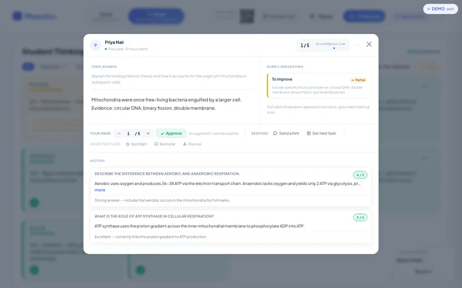
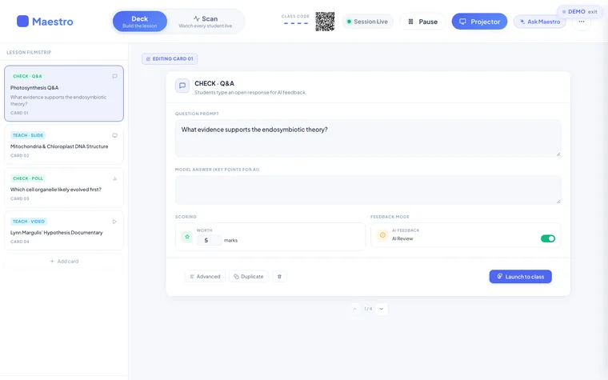
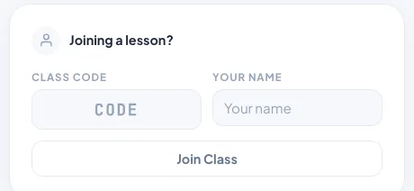

Maestro
Live lessons where every student answers on their own device and the teacher sees the whole class's thinking at once.
No sign-in. Made-up data and sample AI responses. Opens in a new tab.
Designed and built independently, outside my school roles. Demonstrations use made-up data and sample AI responses.

The classroom problem
In a class of thirty, a teacher usually hears from a handful of students. The rest stay quiet, and misunderstandings only surface in the test. Maestro aims to give every student the kind of attention a one-to-one tutor would.
What it does
- The teacher builds the lesson as a deck of cards: questions, slides, polls and video.
- Students join with a class code and a first name, with no account.
- The Student Thinking Grid shows every answer as it arrives, sorted into Needs me, On track and Done.
- The teacher can send a hint, spotlight a strong answer, pause the class or project to the board.
Where AI fits
AI marks each short answer against the teacher's model answer, criterion by criterion, and suggests a strength and a next step. The screen says "AI suggested, override any time", and the teacher approves or changes every mark. In the demonstration version the AI responses are pre-written samples.
A closer look
Select a screenshot to see it in a larger view.





